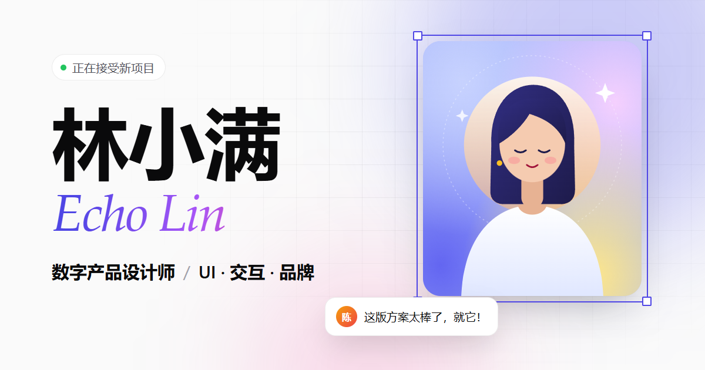
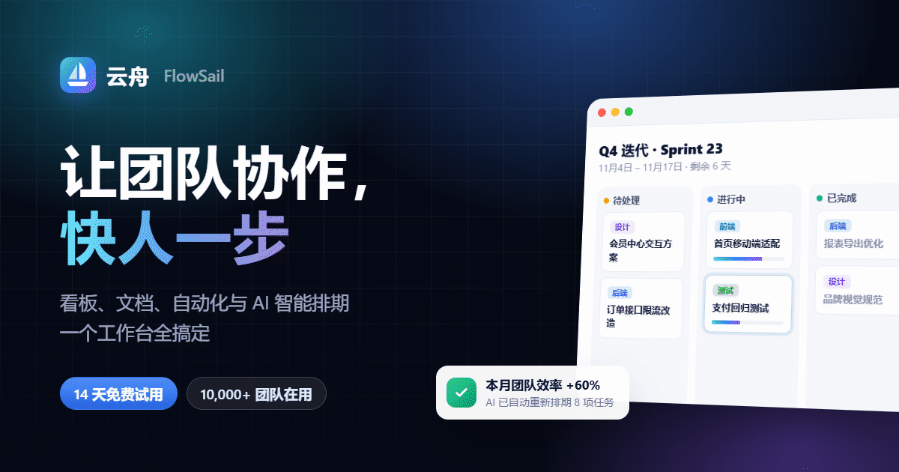
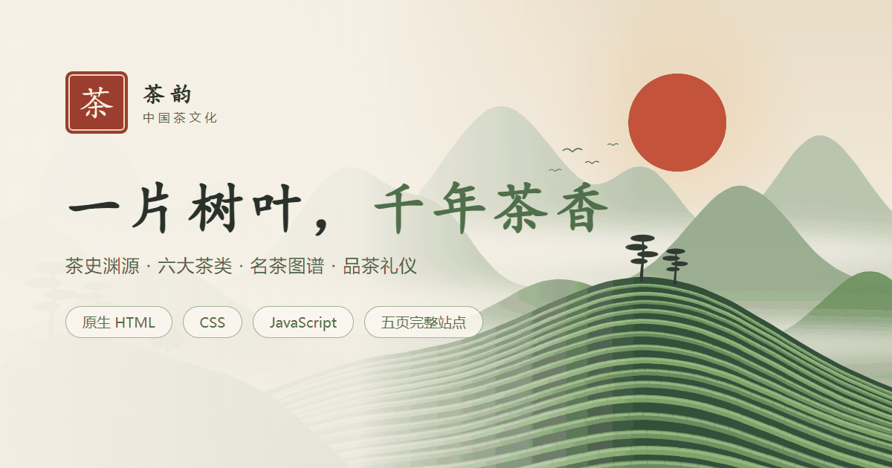

个人主页 / 简历站
林小满 · 设计师个人主页
适合求职、自由职业者打造个人品牌：作品集弹窗、经历时间线、深色模式、联系表单。
查看案例
企业官网 / 落地页
云舟 FlowSail · SaaS 产品官网
适合公司、产品、门店做官网与推广页：功能展示、数据动画、价格表、常见问题。
查看案例
网页设计作业
茶韵 · 中国茶文化（5 页）
原生 HTML + CSS + JS，代码带中文注释：轮播图、灯箱图集、数据列表、表单验证。
查看案例